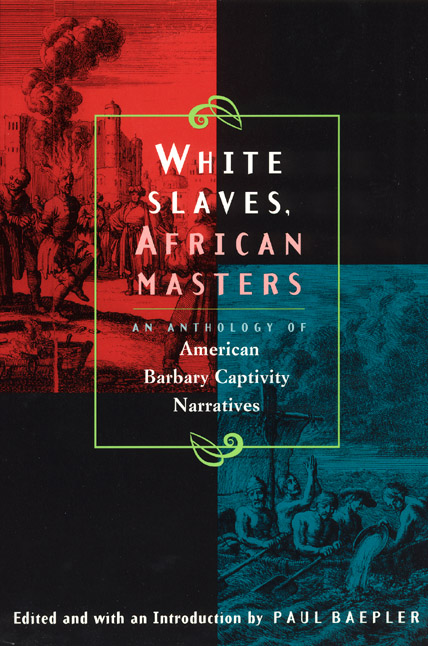

Olavo de Carvalho
Um dos livros mais completos que existe sobre a escravidão. Mostra que a escravidão islâmica foi formidável.
Ver também
-
- A Enxada e a Lança - entrevista do Jô Soares com Alberto da Costa e Silva (https://www.youtube.com/watch?v=Q-vdkYeCUdw)
-
"Por muitos meses hesitei em escrever estas notas. Somente a paciência e a compreensão do poeta e historiador Alberto da Costa e Silva, o organizador deste volume, conseguiram pôr a nocaute meu quase pânico em depor sobre o amigo cuja vida, no seu momento de maior esplendor criativo, acompanhei de perto."
O fenômeno Merquior (por José Mário Pereira) (http://olavodecarvalho.org/o-fenomeno-merquior/)
Mais livros


White Slavery in the Barbary States
Charles Sumner

Christian Slaves, Muslim Masters: White Slavery in the Mediterranean, The Barbary Coast, and Italy, 1500-1800
R. Davis

White Gold: The Extraordinary Story of Thomas Pellow and North Africa's One Million European Slaves
Giles Milton

Afrique: l'histoire à l'endroit
Bernard Lugan

Le génocide voilé : Enquête historique
Tidiane N'Diaye